Why this trip?
Riding solo across the UAE was one of the bravest things I've ever done. I've also been told it was pretty dumb, lol. Dumb or not, I'm very proud of having done it!
I was in Abu Dhabi for work with one of the sovereign wealth funds. I was already a little nervous about traveling to the Middle East, but I knew the UAE was about the safest and most Western-friendly place in the region I could go.
Still, I had this nagging idea: what if I rented a motorcycle and rode through the desert? When else in my life am I going to get the chance? I knew it was a very dumb idea. I knew it could go bad really fast. I still wanted to do it.
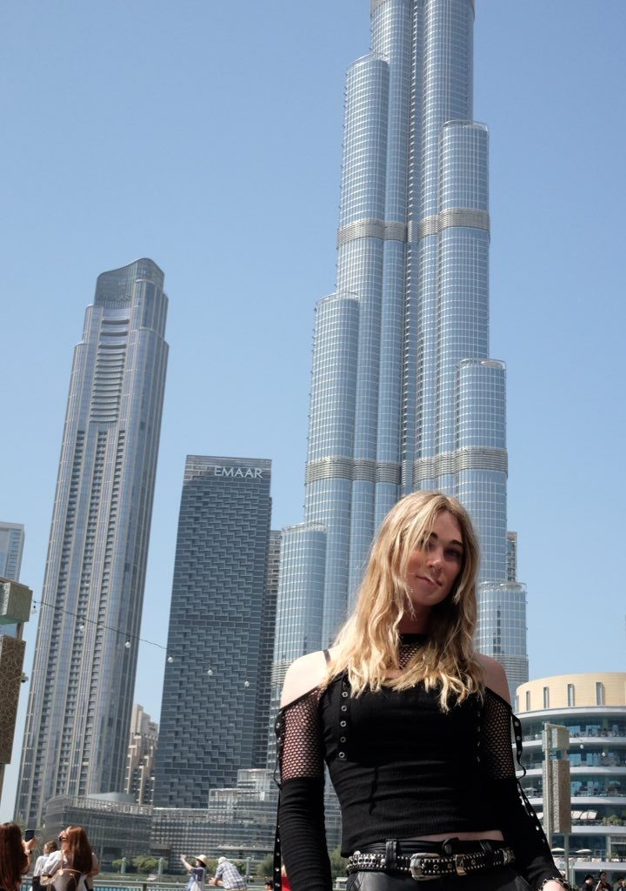
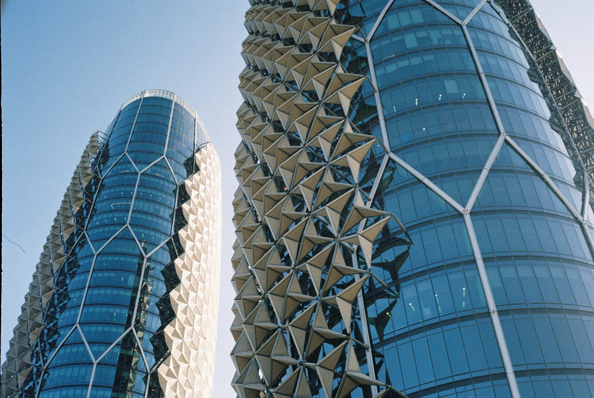
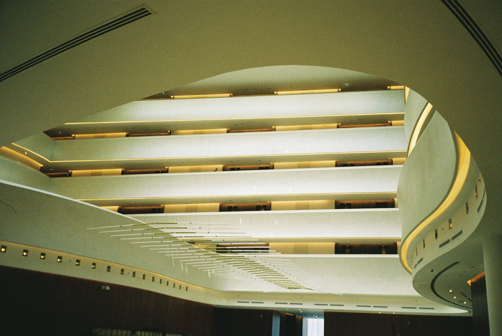
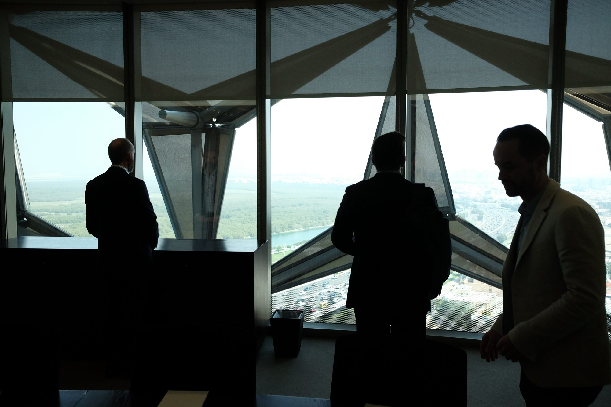
Like a lot of people in the West, I'd always thought of the Middle East as a "dangerous," off-limits part of the world. Proving that wrong was incredibly rewarding. I got to challenge subconscious biases I'd learned about people different from me, and to really test myself: surviving solo in a hostile environment, alongside people I'd been taught to believe were hostile. (They were actually phenomenally nice.)
I talked to a lot of my friends who are from the Middle East, and every single one of them said the same thing: if I were a woman from the Middle East, this would be incredibly frowned upon, and I'd be in danger. But being white, and especially with blonde hair at the time, most people would probably just see me and respect that I was doing something pretty brave. That's exactly what I found.
Night 1: The dunes
My first night there, I connected with a friend of a friend who invited me to go run some dunes in his project car. Total stranger, never met him before. But this is one of those things where if you don't say yes, you never get the great story.
That time of year, you can only do the dunes at night. During the day the sand gets hot enough to actually melt your tires. So we went out late with big Baja lights lighting up everything around us, and I finally understood the flow state people talk about with dune riding. We had some really special moments out there under the stars, in the middle of nowhere.
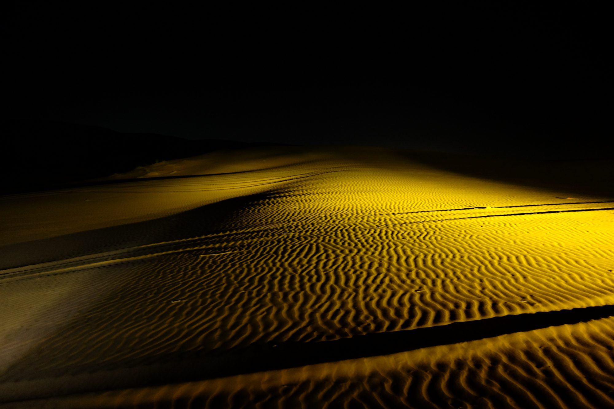
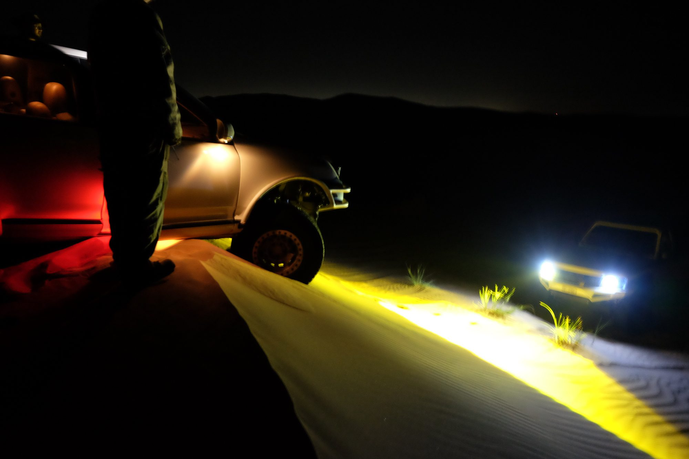
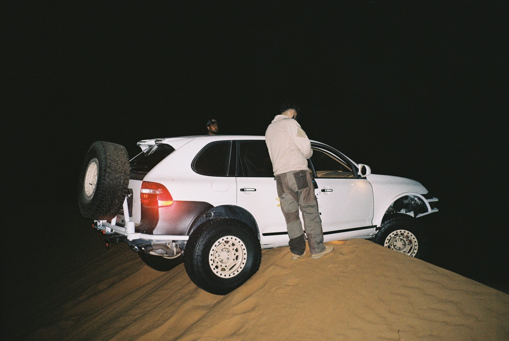
We stayed up through the whole night and drove back as the sun came up.
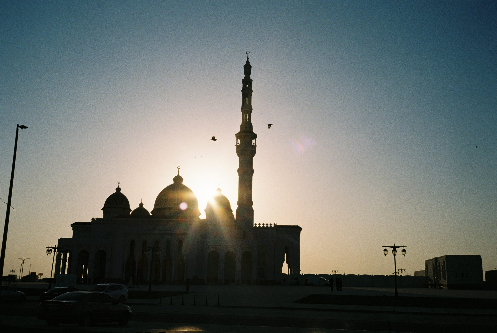
Day 2: The Hajar mountains
The next morning I got a couple hours of sleep, smashed a Monster or two, picked up the Himalayan 450, and rode from the Palm in Dubai out into the desert.
I wanted to get somewhere actually enjoyable to ride, which meant the mountains. So I took the highway through most of the flat desert and the dunes until it turned rocky. Every time I rode over sand, it was so unbelievably slick I might as well have been on a jet ski. Every patch was an instant slide.
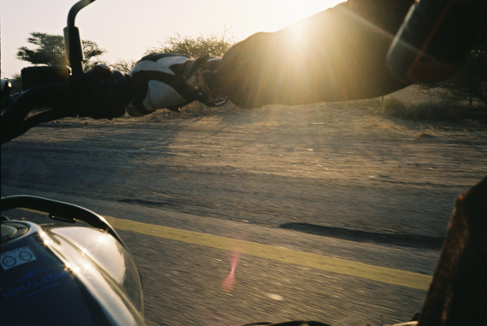
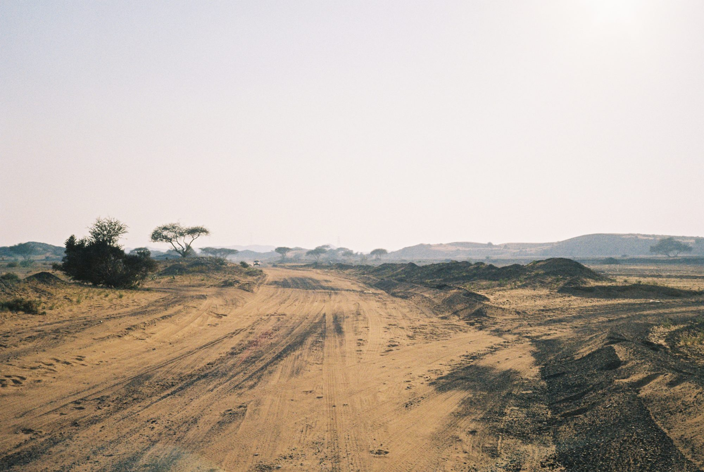
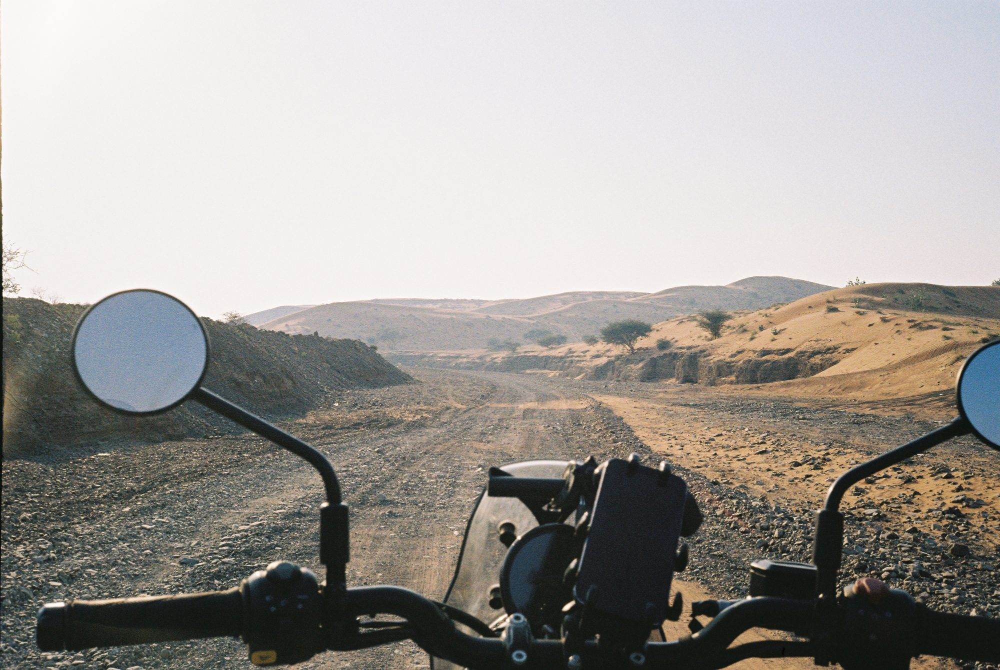
[Dictate: the gravel roads and wadis]
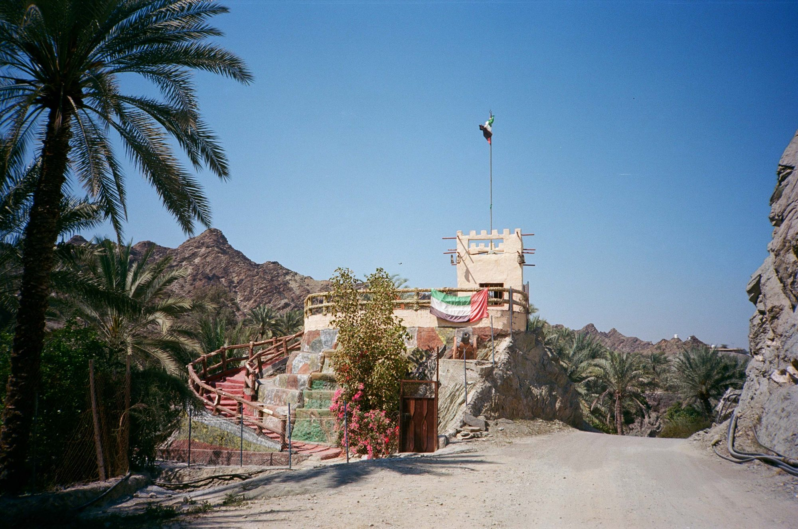
[Dictate: the climb toward the top of the route]
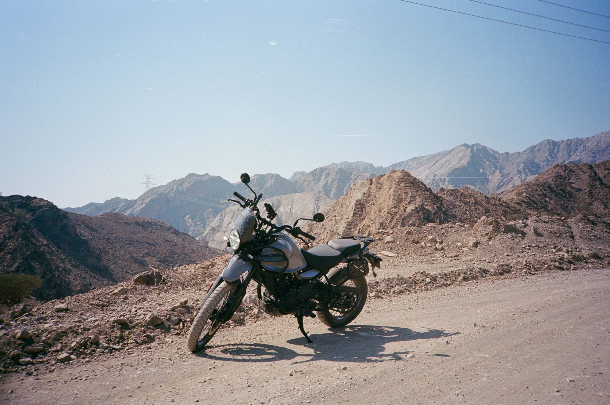
[Dictate: twelve hours later, riding back into Dubai at dusk]
I wish I could say it all went smoothly. There were a couple of scary moments, and I heard some very scary stories. I left early, in a panic, to get out ahead of the geopolitical situation. BUT I got to be one of the very last people to see a peaceful Strait of Hormuz, which is pretty cool. Even that experience has turned out to be a powerful tool for growing as a person.
[Dictate: the scary moments, and leaving early]
Overall, it was a very safe and rewarding experience! Ironically, the greatest danger I faced came from the US government.
[Dictate: what happened with the US government. Right now this line is a cliffhanger with no payoff]
Would I do it again? Probably not. Would I encourage other women to do it solo? Nope. Am I incredibly thankful I did it? Without a doubt.